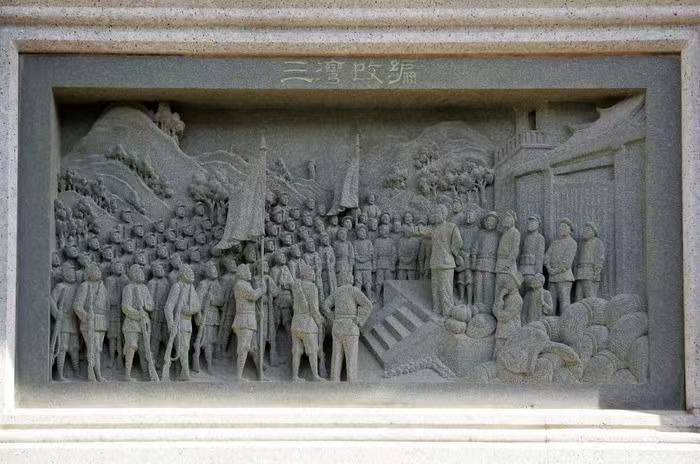
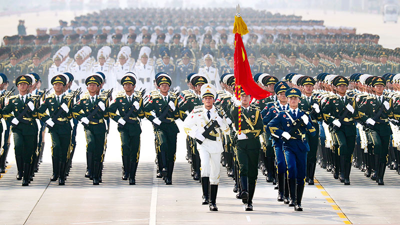
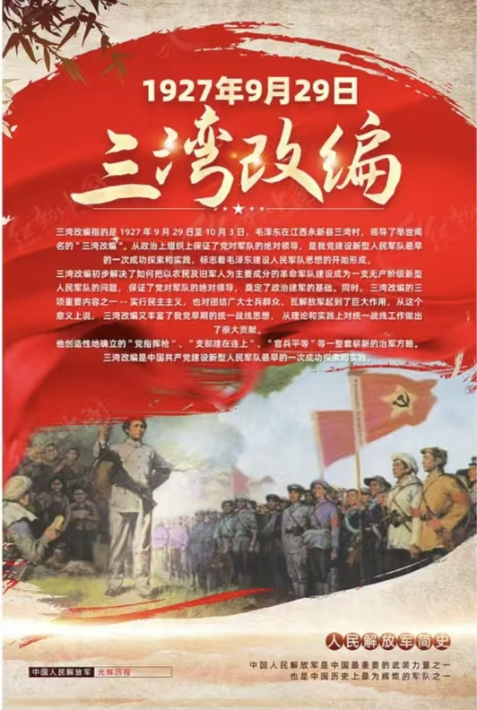

三湾改编不仅在当时具有重要的历史意义，而且对后来的人民军队建设和中国革命产生了深远的影响：
三湾改编确立的党对军队的绝对领导、官兵平等、民主管理等原则，为人民军队的建设奠定了坚实的基础。这些原则后来被写入了中国人民解放军的条令条例，成为人民军队建设的根本遵循。
三湾改编使中国共产党拥有了一支坚强的革命武装力量，为后来的井冈山革命根据地的建立、红军长征的胜利以及抗日战争、解放战争的胜利提供了重要保障。可以说，没有三湾改编，就没有后来的人民军队和中国革命的胜利。

三湾改编的经验对当代中国军队建设仍然具有重要的启示意义：

三湾改编是中国共产党的重要历史遗产，它体现了中国共产党人的创新精神和革命智慧。今天，我们仍然可以从三湾改编中汲取营养，为实现中华民族伟大复兴的中国梦而努力奋斗。
三湾改编的深远影响将永远铭刻在中国革命和建设的史册上，激励着一代又一代的中国共产党人和中国人民为实现中华民族的伟大复兴而奋斗。
